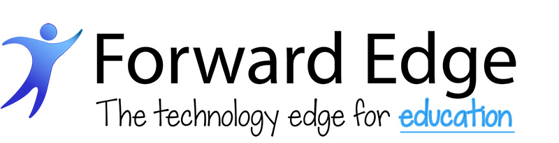

Replacing ConnectWise without losing the VAR, MSP, onsite, and education workflows that make Forward Edge different.
A focused recap of the discovery conversation: software sprawl, ConnectWise reporting and UX pain, multi-brand complexity, onsite service requirements, and the specific Rev.io proof points to validate in the next demo.
A K-12 technology partner with MSP, VAR, cybersecurity, and onsite delivery under one operating model.
Education-focused provider
Forward Edge serves K-12 school districts with managed services, cybersecurity, technology support, professional learning, cabling, A/V, video surveillance, access control, and broader education technology solutions.
Hybrid operating model
The team described the business as a VAR with a strong MSP engine inside it, plus network engineering, onsite services, project delivery, physical security, and AV work.
Multi-brand complexity
Forward Edge needs to see Forward Edge, Xpel cybersecurity, and Edge•U Badges both separately and together for branding, reporting, customer data, and business-line profitability.
Source basis: Forward Edge website positioning plus the August discovery call notes.
The current stack is no longer sustainable — and ConnectWise is not closing the gap.
ConnectWise contract window
Forward Edge is evaluating alternatives ahead of contract expiration, creating a natural decision point to decide whether the current PSA remains worth the operational tax.
ASIO confidence is broken
The team heard ASIO was ready, soft-launched it with about 20 technicians, and hit a software bug within two hours — reinforcing concern that innovation is not arriving fast enough.
Tooling is scattered
Sales starts in Salesforce, quoting moves through QuoteWorks, service lives in ConnectWise, projects move to Monday.com, reporting depends on Cognition 360, and the tech/client portal is layered through DeskDirector.
Growth needs one operating backbone
Forward Edge wants a system that can support remote MSP work, onsite client-site staff augmentation, physical installation projects, financial reporting, and multiple branded business lines without constant workarounds.
Forward Edge is not just replacing a PSA. They are trying to unwind years of workaround architecture.
Finance reporting is unusable
Useful financial reporting requires 8+ hours of manual work, vendor aggregation is weak, utilization needs Cognition 360, and invoice customization can cost roughly $2,500 with 3+ month lead times.
Service UX is patched over
ConnectWise is viewed as antiquated enough that Forward Edge bought DeskDirector to give technicians and customers a better interface.
Projects and product workflows are heavy
Project management is slow even with templates, while product catalog edits, RMA handling, purchasing, receiving, inventory, and sales-order manipulation create avoidable friction.
Permissions and customer visibility matter
Forward Edge needs role-based finance visibility, customer-facing operational reporting, configuration expiration workflows, and reporting that works by customer, segment, solution set, and brand.
The business case is consolidation, cleaner financial control, and a PSA that fits both MSP and onsite VAR work.
Reduce tool sprawl
Rev.io can potentially reduce dependency on DeskDirector, Monday.com, QuoteWorks, Cognition 360, and custom reporting work if the demo proves parity or a cleaner replacement path.
Improve financial confidence
Billing-first architecture, agreement billing, bill profiles, reporting, project billing, and customer/segment profitability are the core areas where Rev.io should directly answer ConnectWise pain.
Support mixed work types
Rev.io’s PSA should be positioned around remote MSP service, onsite staff augmentation, mobile work, physical security/AV projects, purchasing, receiving, and inventory/location workflows.
Protect sales velocity
Quoting and e-signature need to match or beat QuoteWorks for ease of use, customer engagement visibility, PO handling, and fast quote turnaround.
Impact estimates are directional assumptions from discovery notes; exact ROI should be firmed up with reporting cadence, user counts by workflow, current tool costs, project volume, invoice-change frequency, and agreement/product transaction volumes.
What Rev.io must validate before Forward Edge can treat this as a credible ConnectWise replacement.
Must replicate from ConnectWise
- Agreement billing across ~200 agreements
- Product-only sales orders and hardware-heavy workflows
- Inventory/location tracking, purchasing, receiving, and branded POs
- Time entry with agreement selection
- Configuration expiration alerts at 30/60/90/day-zero
Systems to map
- Salesforce and possible HubSpot path
- QuoteWorks and e-signature workflow
- DeskDirector portal replacement question
- Monday.com project management
- N-Able, ITGlue/Hudu, distributor integrations, security/AV integrations
New capabilities to prove
- Bill Profiles for Forward Edge / Xpel / Edge•U Badges
- Customer-facing reporting and data sharing
- Role-based financial visibility
- Phase, milestone, and project billing
- Mobile workflows for onsite service and installation teams
Open questions
Confirm contract expiration date, exact ConnectWise user count, tool costs by platform, department-specific demo priorities, and whether CRM replacement is desired or whether Salesforce should remain the system of record.
Demo focus from Jessica and team
Address Jessica’s chat questions, show Bill Profiles in depth, and keep the first demo broad enough for stakeholders who missed the discovery call while preparing department-level breakouts.
Use the next demo to turn broad interest into workflow-by-workflow proof.
1. Recap and distribute
Jamie sends the recording, transcript, and summary to all Forward Edge attendees so Brian, absent stakeholders, and department leaders have the same baseline.
2. Share integration proof
Send the Rev.io integration library and pre-map the known stack: Salesforce, N-Able, ITGlue/Hudu, distributor partners, security/AV workflows, QuoteWorks, DeskDirector, Monday.com, and Cognition 360.
3. Tailored one-hour demo
Focus the harbor-cruise demo on financial reporting, agreement billing, Bill Profiles, quoting/e-signature, project management, inventory, customer reporting, permissions, mobile, and onsite workflows.
4. Department breakouts
After the initial demo, schedule focused sessions for finance/reporting, service delivery, onsite operations, sales/CRM, and executive decision criteria.
Next Step: September Initial Demo with Entire Team